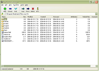
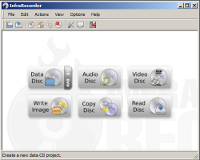
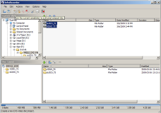
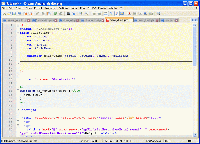
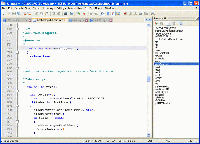
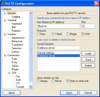
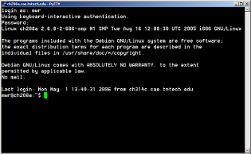
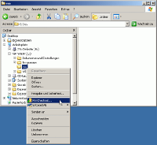

หมวดซอฟต์แวร์ :
สนับสนุนโดย :
อรรถประโยชน์
7-Zip
โปรแกรม 7-Zip เป็นโปรแกรมบีบอัดและคลายข้อมูล รองรับนามสกุลอื่นๆได้มากมาย ดังนี้ 7zip, ZIP, CAB, RAR, ARJ, GZIP, BZIP2, TAR, CPIO, RPM และ DEB สำหรับ ไฟล์สกุล ZIP และ GZIP โปรแกรมนี้บีดอัดข้อมูลได้ดีกว่า โปรแกรม PKZipหรือ WinZip ประมาณ 2-10 % และสำหรับ ไฟล์สกุล 7zip นั้นเทียบกับ สกุล zip สามารถบีบอัดข้อมูลได้เล็กกว่าถึง 45 % โปรแกรมสามาถปรับแต่งสิ่งต่างๆได้มากมาย ทำให้ผู้ใช้รักษสมดุลระหว่าง การบีบอัด กับ ความเร็วได้ หน้าตาของโปรแกรมออกแบบมาให้สามารถใช้งานได้ง่าย และรองรับการใช้งานได้ถึง 40 ภาษา
{kind=link}

Infrarecorder
โปรแกรมสำหรับใช้ในการเขียนแผ่น CD & DVD ที่มีคุณสมบัติในการเขียนข้อมูลในรูปแบบต่างๆ ได้ ไม่ว่าจะเป็นไฟล์ข้อมูลต่างๆ หรือสำหรับผู้ที่ชื่นชอบการบันทึกเพลงในรูปแบบต่างๆ โปรแกรมนี้ยังมีคุณสมบัติ Audio Mix mode ใช้กับไฟล์เสียงได้หลายรูปแบบ เช่น wav, wma, mp3 หรือ ogg เป็นต้นนอกจากนี้ยังสามารถบันทึกข้อมูลจากอิมเมจไฟล์ อย่าง(ISO และ BIN/CUE)ได้ รวมถึงใช้งานกับแผ่น dual-layer DVDS ได้อีกด้วย อีกทั้งโปรแกรมยังมีความสามารถในการทำ multi-session discs ได้อีกด้วย 
{kind=link}
{kind=link}
Notepad++
Notepad++ เป็นโปรแกรมที่จะมาแทนที่ Notepad ที่มาพร้อมกับ Windows โปรแกรม Notepad++ ใช้พื้นที่น้อย ทำงานรวดเร็ว และรวบรวมไว้เฉพาะเครื่องมือที่จำเป็น โปรแกรมมีความสามารถเพิ่มเติมคือ ใส่สีให้ syntax ซึ่งจะมีประโยชน์มาก สำหรับผู้ที่นำไปใช้ในการเขียนภาษา HTML หรือ script คุณยังสามารถเลือกระดับการขยายหรือย่อ และเลือกแบบอักษรได้ Notepad++ รองรับ Unicode, UTF-8, Unix ไฟล์แบบ Mac 
{kind=link}
{kind=link}
Putty
โปรแกรมเทอร์มินัลยอดนิยมที่ใช้ติดต่อเข้าไปยังเซิร์ฟเวอร์ด้วย protocol Telnet และ SSH เนื่องจาก PuTTY สามารถปรับ แต่งค่าต่างๆ ได้อย่างละเอียด และสามารถเก็บค่าที่ปรับแต่งไว้เป็น session ทำให้คุณสามารถล็อกอินเข้าไปยังเซิรฟเวอร์ต่างๆ ได้อย่างรวดเร็ว เพียงเลือก session ที่บันทึกเอาไว้ PuTTY ทำงานได้ดีกับพรอกซี และรองรับการเชื่อมต่อ X11 (forwarding) 
{kind=link}
{kind=link}
Tortoise SVN
ซอฟต์แวร์ควบคุมเวอร์ชันของซอร์สโค้ด (version control) ที่ดีกว่า CVS ถ้าคุณต้องการพัฒนาซอฟต์แวร์ร่วมกันเป็นทีม และต้องการความสามารถในการเรียกกลับไฟล์เวอร์ชันเก่า Subversion เป็นคำตอบของคุณ เนื่องจาก Subversion เก็บเวอร์ชันทั้งไฟล์และ directory ทั้งการ copy, move และ rename ใน Subversion คุณสามารถ branch และ tag ได้อย่างไม่เปลืองทรัพยากร คุณสามารถใช้งาน Subversion ภายในเครื่องเดียว หรือใช้งานร่วมกันผ่านเน็ตเวิร์ก โดยใช้ standalone server, WebDav หรือผ่าน SSH ก็ได้เช่นกัน
{kind=link}
{kind=link}